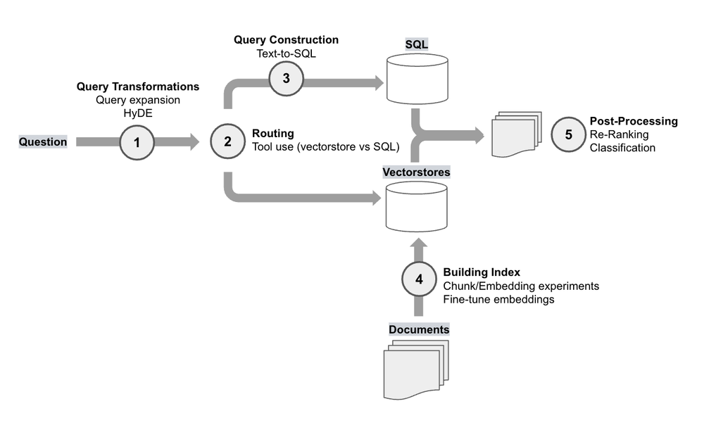
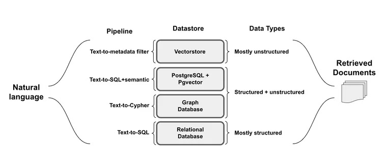
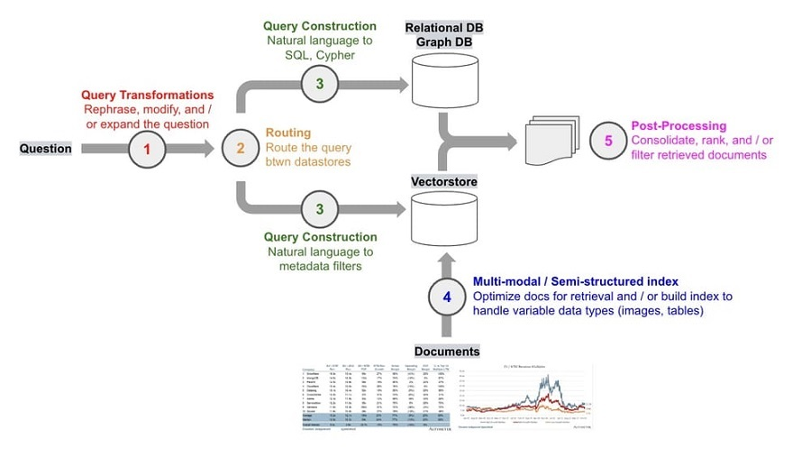

OpenAI RAG 案例[3] #

- retrieval with consine similarity
- HyDE retrieval [5] Fine-tune Embeddings Chunk/embedding experiments
- Reranking [6][8] Classification step
- Prompt engineering Tool use Query expansion[5]
Query Transformations[5] #
- Query expansion Multi-query retriever
- HyDE
- Step back prompting [抽象prompting]
- Rewrite-Retrieve-Read
Query Construction [4] #

| Examples | Data source | References |
|---|---|---|
| Text-to-metadata-filter | Vectorstores | Docs |
| Text-to-SQL | SQL DB | Docs, blog, blog |
- Text-to-metadata-filter [7]
A self-querying retriever is one that, as the name suggests, has the ability to query itself. Specifically, given any natural language query, the retriever uses a query-constructing LLM chain to write a structured query and then applies that structured query to its underlying VectorStore. This allows the retriever to not only use the user-input query for semantic similarity comparison with the contents of stored documents but to also extract filters from the user query on the metadata of stored documents and to execute those filters.
Advanced RAG #
架构 [1] #
- 离线 index
- 在线 查询
